มีอะไรใหม่
การเปลี่ยนแปลงทั้งหมดของ eDoc Helper ตั้งแต่รุ่นแรก ล่าสุดอยู่บนสุด — ข้อความเดียวกับที่ตัวช่วยแสดงหลังอัปเดต
ภาพจากหน้าตัวอย่างที่ใช้ข้อมูลสมมุติ · ภาพของรุ่นก่อน 17 ตุลาคม 2569 แสดงหน้าตาในรุ่นปัจจุบัน
21 ตุลาคม 2569
- หนังสือที่เปิดจาก "สร้างหนังสือ" มีแถบของตัวช่วยและพิมพ์ได้ เหมือนหนังสือเข้า
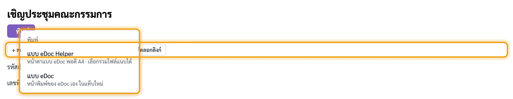
- ชื่อไฟล์ PDF ที่บันทึกจากการพิมพ์ และไฟล์ zip: รหัสอ้างอิง ตามด้วยชื่อเรื่องแบบสั้น
- รวมไฟล์แนบทั้งหมด เร็วขึ้น: ดาวน์โหลดและวาดหลายไฟล์พร้อมกัน บอกความคืบหน้า และจำตัวเลือกไว้
- ปุ่ม "พิมพ์" ของ eDoc ใช้ได้กับทุกหนังสือ รวมถึงหนังสือที่ไม่อยู่ในกล่องที่ซิงก์ (เช่น ของหน่วยงานอื่น)
- ข่าวอัปเดตเป็นการ์ดเล็กมุมขวาล่าง พับเก็บเอง · ดูทั้งหมดได้ที่เว็บไซต์
- แถวแสดงเฉพาะ "ยังไม่อ่าน" · บอร์ดย่อคอลัมน์ที่ว่าง
- จอเล็กไม่ตกบรรทัด · หน้าหนังสือมีปุ่มพิมพ์ปุ่มเดียว
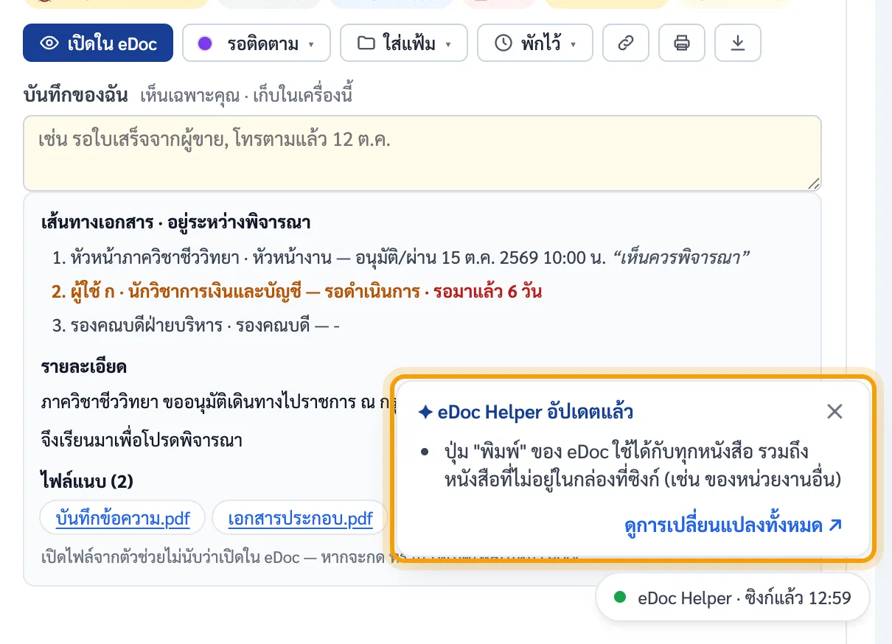
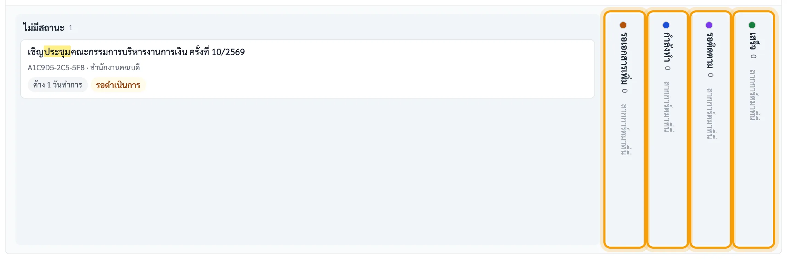
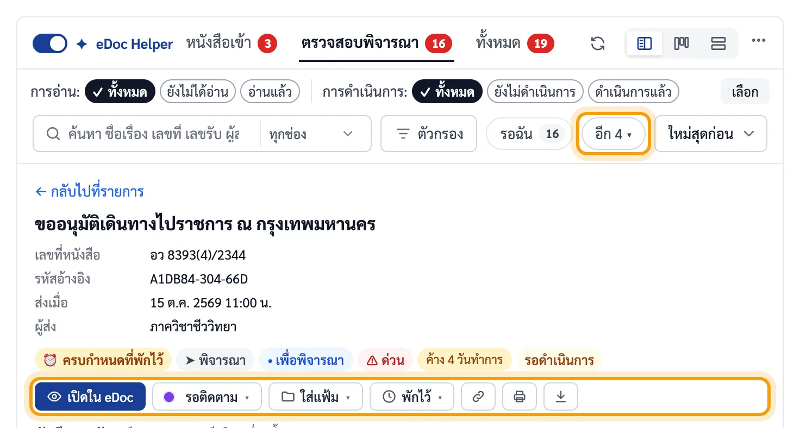
20 ตุลาคม 2569
- กลับมาหน้า eDoc ด้วยปุ่มย้อนกลับ หรือเปิดแท็บที่ทิ้งไว้นาน ตัวช่วยกลับมาทำงานเอง ไม่ต้องรีเฟรช
- เมนูสถานะ/แฟ้มในตารางของ eDoc ไม่ถูกแถวถัดไปบังแล้ว และปุ่มของตัวช่วยอยู่บรรทัดเดียวใต้ชื่อเรื่อง
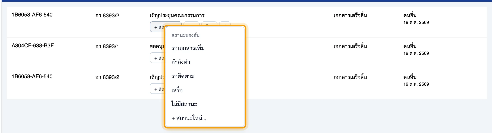
- ⚙ สำรอง → ส่งออก เก็บครบขึ้น: มุมมองที่บันทึก กฎใส่แฟ้มอัตโนมัติ ตัวกรองที่ปักไว้ รูปแบบรายการ และการแจ้งเตือน — นำเข้าแล้วกลับมาครบ
- ปุ่ม "พิมพ์" ของ eDoc (1.2.1) บนหน้าหนังสือ ให้เลือกได้: พิมพ์แบบ eDoc Helper หรือแบบ eDoc เอง (เปิดหน้าพิมพ์ของ eDoc ในแท็บใหม่ — ไม่ค้างที่ตัวหมุนโหลด)
- พิมพ์ได้จากทุกหน้าหนังสือของ eDoc (รายละเอียด ค้นหา หนังสือเผยแพร่ หนังสือเข้า): หน้าตาแบบ eDoc พอดีกระดาษ A4 ไม่มีเมนูด้านข้าง
- เลือก "รวมไฟล์แนบทั้งหมด" ได้ก่อนพิมพ์ · ท้ายกระดาษบอกวันเวลาที่พิมพ์และเลขหน้า
- ตัวกรอง → "ในแฟ้ม eDoc" แสดงเฉพาะเรื่องที่เก็บในแฟ้มหนังสือนั้นของ eDoc
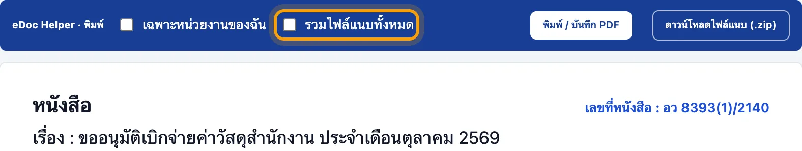
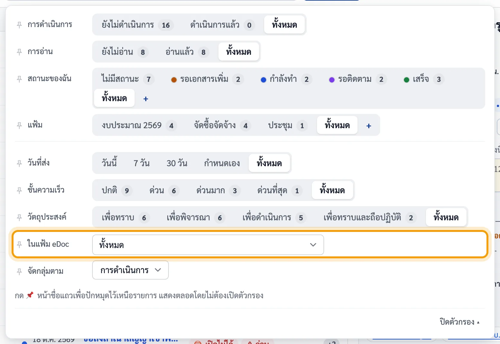
- ตัวช่วยตรวจและเติมรายละเอียด/เส้นทางเอกสารที่ขาดให้เองหลังอัปเดต (เช่น ช่วงที่ eDoc เปลี่ยนเวอร์ชัน)
- กด ดูย่อ ที่เรื่องที่ยังไม่มีรายละเอียด ตัวช่วยดึงให้ทันที
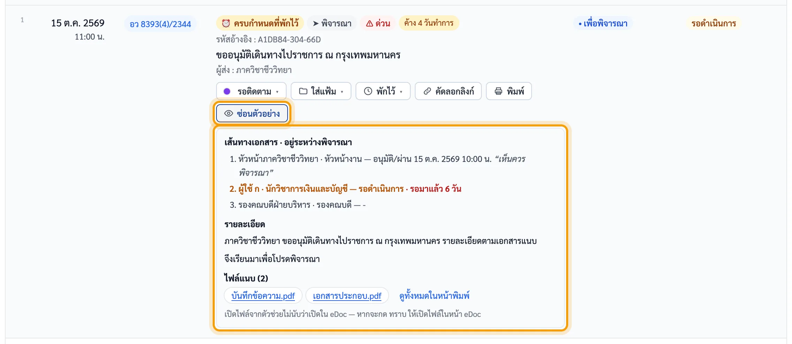
- ปุ่ม "เลือก" เหมือน eDoc: ช่องติ๊กแสดงเมื่อกดเลือก เพื่อทำกับหลายเรื่องพร้อมกัน
- ค้นหาและ Ctrl+K พบหนังสือเผยแพร่ด้วย (ป้าย "เผยแพร่" เปิดหน้าหนังสือเผยแพร่ใน eDoc)
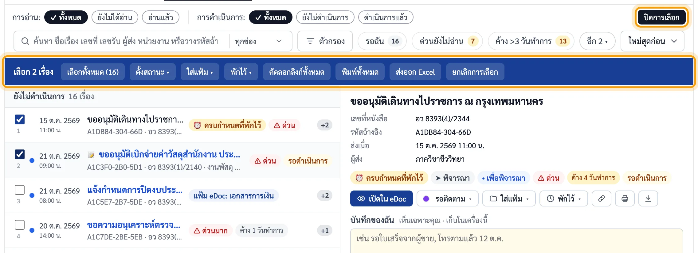
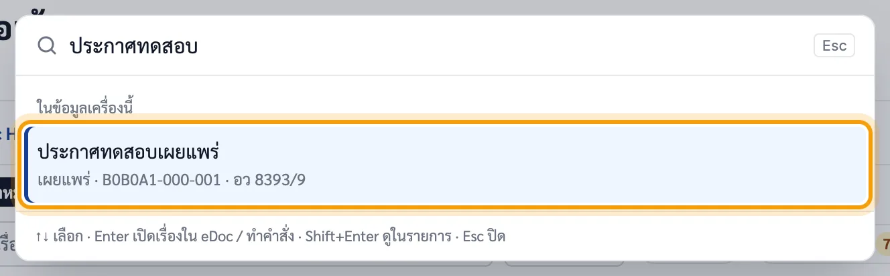
- แท็บและปุ่มกรองเหมือน eDoc 1.2.0: หนังสือเข้า · ตรวจสอบพิจารณา · ทั้งหมด
- ป้าย "แฟ้ม eDoc" บนเรื่องที่เก็บในแฟ้มหนังสือของ eDoc · แฟ้มของตัวช่วยเปลี่ยนชื่อเป็น "แฟ้มส่วนตัว"
- หนังสือเผยแพร่ล่าสุดที่หน้าหลักของแผงด้านข้าง
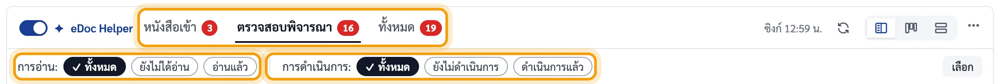
19 ตุลาคม 2569
- รองรับ eDoc 1.2.0: หนังสือเข้าส่วนบุคคลซิงก์ได้อีกครั้ง
- แท็บพิจารณาตรงกับ "ตรวจสอบพิจารณา" ของ eDoc — หนังสือที่ส่งถึงคุณเพื่อทราบอยู่ในอีกแท็บ
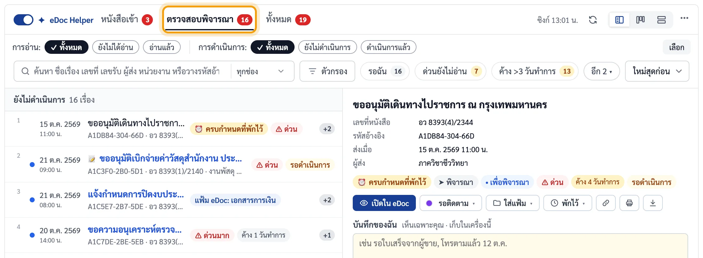
17 ตุลาคม 2569
- สถานะตรงกับ eDoc 1.1.2: กด "ทราบ" แล้วนับเป็นดำเนินการแล้ว
- ปุ่มสถานะ eDoc Helper ย้ายไปมุมขวาล่าง ไม่บังท้ายเมนู eDoc
- ⚙ ตั้งค่า บอกเวอร์ชัน eDoc และขนาดข้อมูลในเครื่อง
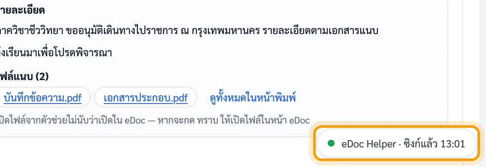
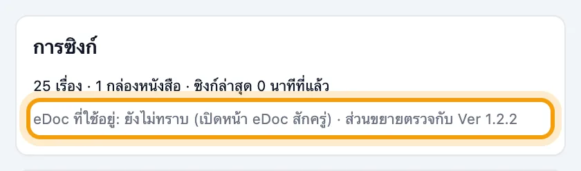
15 ตุลาคม 2569
- ข้อความตอบกลับแสดงทันทีจากข้อมูลในเครื่อง ใช้ค้นหา ตัวกรอง สถานะ และแฟ้มได้เหมือนหนังสือเข้า
- เปิดครั้งแรก: ตั้งค่าพร้อมภาพทุกตัวเลือก และทัวร์ชี้ปุ่มบนหน้าจริง · วิธีใช้เป็นแผ่นสรุปแป้นลัด
- Ctrl+K: Enter เปิดเรื่องใน eDoc · Shift+Enter ดูเรื่องนั้นในรายการ
- หนังสือเข้าเร็วขึ้น: ขอจาก eDoc เฉพาะส่วนที่เครื่องยังไม่มี · แถบของตัวช่วยบนหน้าหนังสืออยู่บนสุด
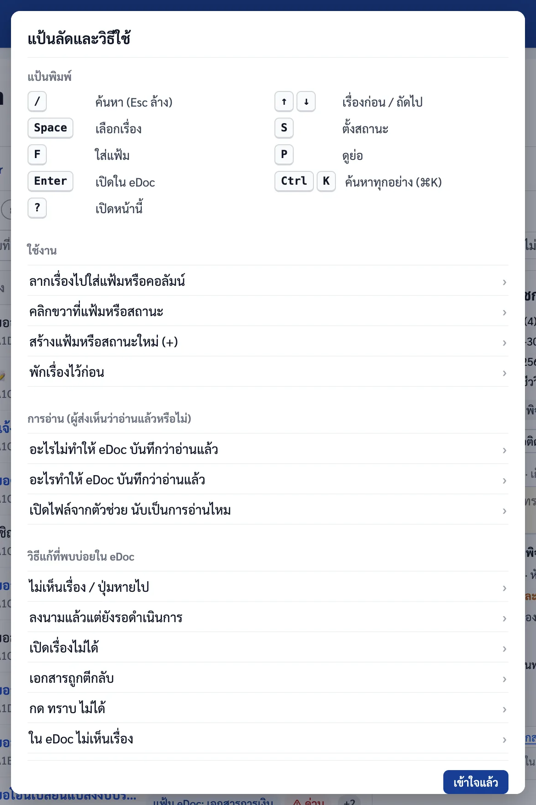
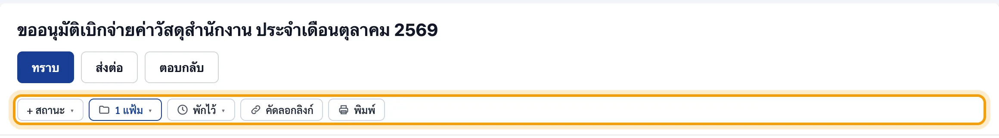
14 ตุลาคม 2569
- กรอบหน้า eDoc ขึ้นทันที และดูรายการจากข้อมูลในเครื่องได้ระหว่างรอ eDoc โหลด
- ใหม่: หายจาก eDoc · ดาวน์โหลดไฟล์แนบ (zip) · การแจ้งเตือน · วันติดตาม
- 📌 ปักแถวตัวกรองที่ใช้บ่อยไว้เหนือรายการ
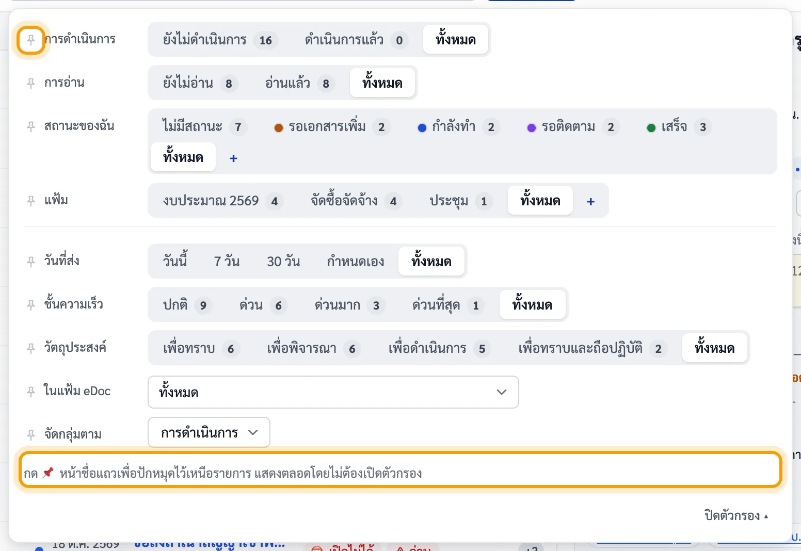
13 ตุลาคม 2569
- แถบด้านบนเหลือสองแถว: สวิตช์ แท็บ และมุมมอง · ค้นหา ตัวกรอง และมุมมองด่วน
- กล่องอื่น: เรื่องที่รอในกล่องอื่นของคุณ กดแล้วเปิดกล่องนั้น
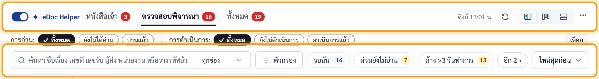
12 ตุลาคม 2569
- เปิดไม่ได้: รวมเรื่องที่ eDoc เปิดไม่ได้ คัดลอกรายงาน (เฉพาะรหัส) และตรวจซ้ำได้
- ดูย่อบอกเมื่อเลขที่หนังสือเปลี่ยน · แถวมีลำดับ
- ออกจากระบบแล้วทุกหน้าจอว่างทันที · ถาม eDoc ทีละครั้ง ไม่เพิ่มภาระให้ระบบ
11 ตุลาคม 2569
- มุมมองใหม่: รายการพร้อมช่องรายละเอียด · บอร์ดตามสถานะ (ลากการ์ดได้) · Ctrl+K · ส่งออก Excel
- สถานะและแฟ้มของฉัน: สร้าง แก้ คลิกขวา ลากวาง · บันทึกส่วนตัวต่อเรื่อง
- พักไว้ถึงเวลาที่เลือก · ใส่แฟ้มอัตโนมัติจากมุมมองที่บันทึก
- รวม eDoc v2 · เส้นทางเอกสารบอกเวลาแต่ละขั้น · อาจเกี่ยวข้อง · เรื่องที่ฉันเสนอที่รอนาน
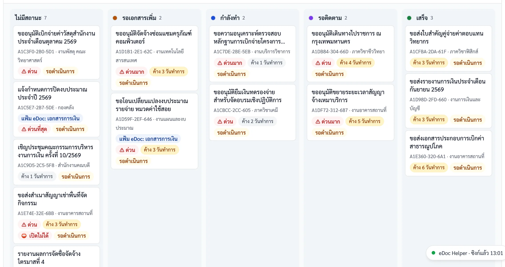
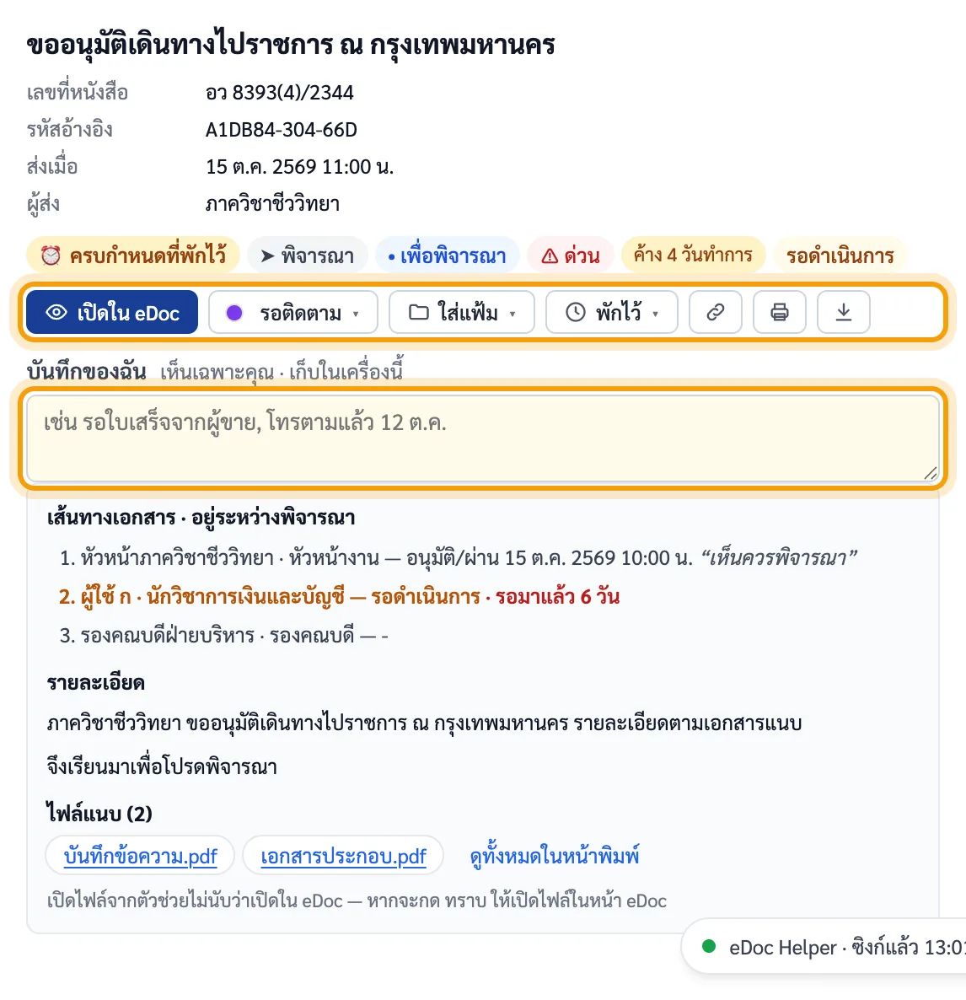
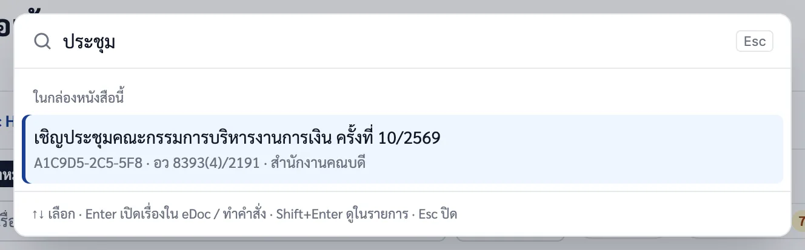
10 ตุลาคม 2569
- ดูย่อแสดงรายละเอียดหนังสือ และเปิดไฟล์แนบได้โดย eDoc ไม่บันทึกว่าอ่านแล้ว
- ตัวกรองแฟ้มในแถบเครื่องมือ นับจำนวนต่อแฟ้ม รวมแฟ้มย่อย
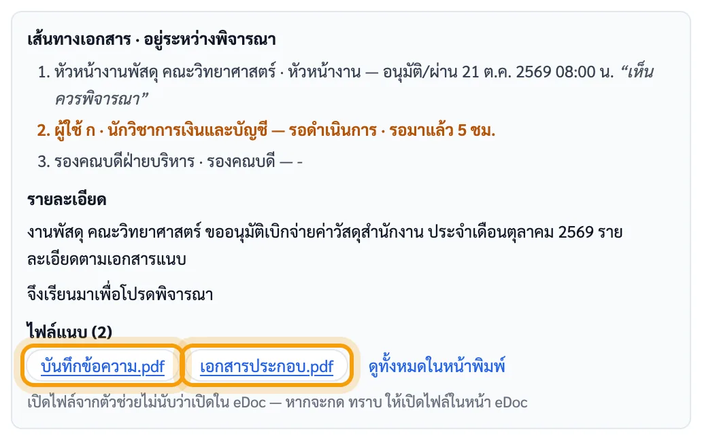
9 ตุลาคม 2569
- รุ่นแรก: กล่องหนังสือเข้าของตัวช่วยบนหน้า eDoc เปิด/ปิดได้ อ่านอย่างเดียว ข้อมูลอยู่ในเครื่องของคุณ
- ค้นหาภาษาไทย ตัวกรอง จัดกลุ่ม มุมมองด่วน · สถานะ แฟ้ม และปุ่มบนแถวในตารางของ eDoc
- แผงด้านข้าง: ค้นหาและติดตามเรื่องที่ฉันเสนอ · พิมพ์พร้อมเส้นทางเอกสาร · ทำหลายเรื่องพร้อมกัน · ซิงก์ตอนนี้
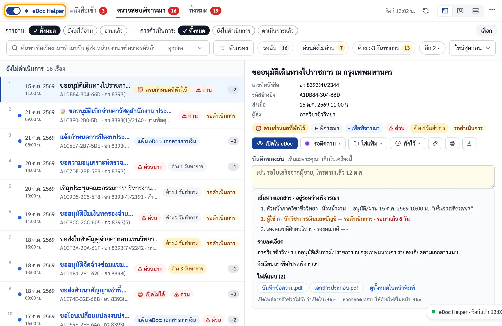
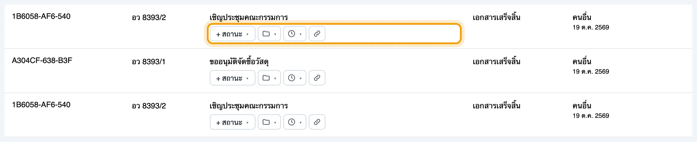
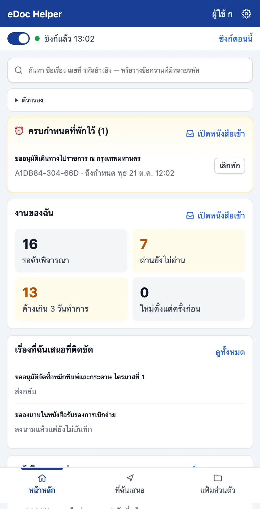